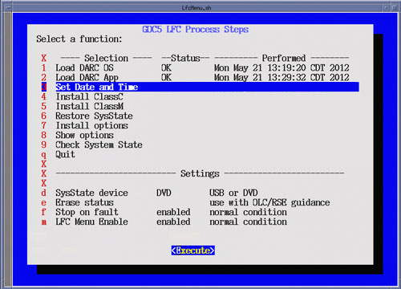
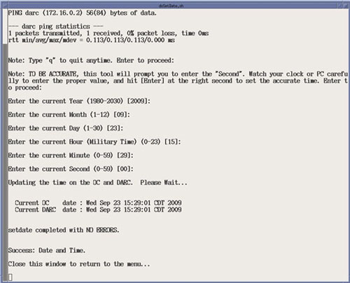

Select Set Date and Time (Menu Selection # 3)
Select [Execute], the Set Date and Time Utility will open in a shell window.
Follow on screen instructions for setting the correct date and time.
Upon completion of the Set Date and Time Utility, close the shell window to return to the LFC Menu.
Illustration 26: LFC Menu - Set Date and Time Selection

Illustration 27: Set Date and Time Execution
